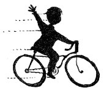
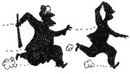

Bu arada Nisan ve Erim dik mermer merdivenleri tırmanmaya başladılar. Tam on üç basamak çıktılar, bir eşikten daha geçince küçük, çok güzel bir odaya geçtiler.
— Burası orası, dedemin resmini yaptığı pencere. Çinilere bak!
— Müthiş! Düşünsene, kıtaları yöneten padişahlarla aynı odadayız. Bir de deden ve babamın burada olduklarını düşündükçe daha da heyecanlanıyorum. Onlar da bir zamanlar bu odadaydılar, dedi Erim.
Hadi hızlan, biraz daha konuşursan imamın sopasıyla aynı odada olma ihtimalimiz var, dedi Nisan,
İkisi de ikinci resimdeki su testisinin olduğu penceredeki taşa doğru yürüdü. Taşın etrafındaki sıva, diğerlerinden daha farklı gibiydi. Erim çakısıyla ses çıkarmadan etrafını kazımaya başladı. Sonra cebindeki keskiyi çıkardı. Taşı yerinden oynatmaya çalıştı. Keskiyle kenara her vurduğunda çıkan tok sesi bastırmak için aşağıda Ahmet Tevfik Efendi’nin gittikçe daha çok bağırarak dua okumaya başladığını duyuyorlardı:
— Velem ye...
Derken bir anda aşağıdan gürültü ve kovalama sesleri duydular. Hayret içinde birbirlerine baktılar.
— Galiba yukarı geliyor, dedi Nisan.
Erim keskiye yüklendi; taş, çatırtıyla yerinden kalktı. Altından bir kutucuk çıktı. Erim, Nisan’a verdi kutuyu.
— Arkamdan gel. Bana bir şey olursa kaç. Sakın kutuyu kaptırma! Unutma, bunun içinde çok önemli bir şey var. Ben nasılsa kendimi kurtarırım.
Merdivenlerden hızla indiler. Ahşap kapıdan çıkarken önde Ahmet Tevfik Efendi, arkasında imam efendiyi “Bre deyyus! Bre hain!” diye bağırarak koşarken gördüler. Zafer’in çoktan bisikletin üstünde hazır olduğunu fark ettiler. İmam, Ahmet Tevfik Efendi’nin peşinden koşarken bir anda bir şey hatırlamış gibi durdu ve geriye doğru baktı; normalde kilitli olması gereken kapının açık ve önünde iki çocuk olduğunu fark etmişti ve döndü:
— Siz kimsiniz bre? Ne arıyorsunuz padişah mahfilinin kapısında?

İmam bahçede, cami kapısının önüne kadar gelmiş olan Erim ve Nisan’la bisikletler arasındaki yolun tam ortasındaydı. Ahmet Tevfik ve Zafer, bisikletlerinin üstünde kararsızca ikisine bakıyorlardı. “Fırla” diye bağırdı Erim,
— Sen sağından, ben solundan, sen uzağından geç. Yakalarsa beni yakalasın. Beş deyince: hazır, üç, dört, beş!
İkisi de ok gibi fırladı. İmam, penaltı bekleyen kaleci gibi eğildi, bir Nisan’a, bir Erim’e bakıyordu. Son anda uzak olmasına rağmen Nisan’a doğru hareket etti ve bir hamlede Nisan’ı yakaladı. Yakalamasıyla birlikte Erim durdu.
— Allah’ım beni affet.
Koştu ve imamın sırtına atladı ama koca bir filin üstüne sinek konmuş gibi oldu doğrusu. “Sen de mi geldin?” dedi imam, onu da yakaladı. Bu arada Nisan tüm gücüyle imamın Erim’i tutan kolunu ısırınca adam, Erim’i bıraktı ama Nisan’ı tutan eli gevşemedi. Debelenirken bir anda Nisan’ın kasketi düştü ve uzun siyah saçı açıldı. İmamın büyük bir şaşkınlıkla elleri gevşedi: “Aaa kızmış!” dedi. Nisan o şaşkınlıktan yararlanarak fırladı ve bisikletlere doğru koştular. Yardıma gelmiş olan Ahmet Tevfik de tekrar bindi bisikletine.
— Koşun çocuklar, geliyor arkanızdan!
İmam eline geçirdiği koca bir odunla arkalarından koşuyordu. Bizimkiler hızlanmaya çalıştılar. Ahmet Tevfik özellikle arkada kaldı, “Hadi hızlanın çocuklar!” diye tekrar etti ve Zafer’i itmeye çalıştı. Zafer, en çok kalkışta sorun yaşıyordu. Bu arada imam yetişti ve odunu savurdu. Odun, Ahmet Tevfik’in başının arkasını sıyırdı. “Aah!” diye bağırdı Ahmet Tevfik ama velosipeti sürmeye devam etti. İmam, 100 metre koşucuları gibi arkalarından koşmaya devam ediyordu. Ahmet Tevfik arkalarından bağırdı:
— Sağ tarafa! Sağ tarafa! Yokuş aşağı yakalayamaz...

Çocuklar panikle sağa döndüler. Ahmet Tevfik de dönüyordu ki imam ceketinden yakaladı, asılmaya başladı. Ahmet Tevfik sağ elini bıraktı, geriye döndü, ceketin sağ kolu çıktı. Yokuşun başında imam asılmaya devam ediyordu. Bu sefer sağ eliyle gidonu tutup sol elini bıraktı, imam asılınca ceket “fışş” diye çıktı ve imamın elinde kaldı. Ahmet Tevfik yokuş aşağı büyük bir hızla kaçarken arkadan imamın gür sesini duydular:
— Şapkanı çıkar Ahmet Efendi! Belki sen de kızsındır!
Ahmet Tevfik Efendi’nin başının arkasından kanlar sızıyordu ama gülümsemeden edemedi.